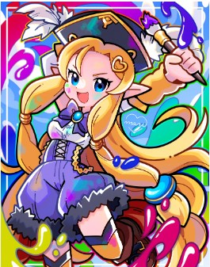
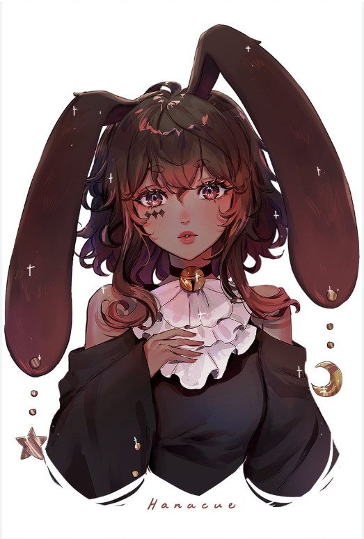
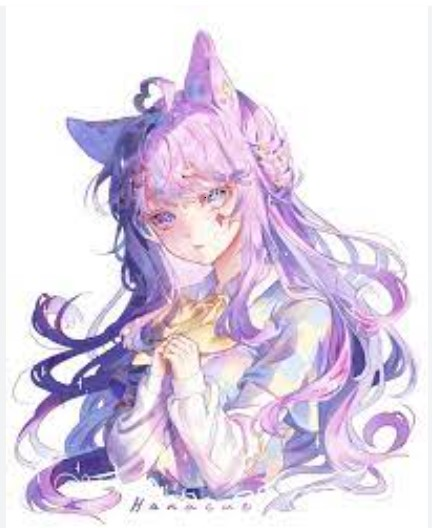

My favorite color is pink. I like to wear pink. I have pink jackets, a pink cap, pink sunglasses, and other pink clothing articles. My room is also pink. Some of my favorite shades of pink are blindingly neon pink and light pink.
My favorite food is hakka noodles. I also really like chicken munchurian.
My favorite pastimes (in order) are drawing, playing video games, and playing piano. My favorite medium is arcrylics. I try to paint in realism from pictureso the internet. For realism, I need reference pictures but I only use real photos, because if someone already drew a picture then it feels like copying.
My favorite book series is Lockwood and Co. It's set in a world where ghost come out at night and if they touch you, you die, but adults can't see them. It has creepy parts and murder mysteries.
I am good at drawing semi-realism and my favorite medium is arcrylics. However, Iv'e learned that I am not that good at drawing anime, so I've decided to teach myself by learning from people on Youtube.
Marikyuun's style is sooo cute, and the trick is to draw "thick lines on the outside and thin lines on the inside".
Hanacue's style is very pretty, and I especially like the way she draws hair
 My favorite shows are Locke and Key, Wednesday and Lost in Space
My favorite video game is The Legend of Zelda. My favorite versionn is Tears of the Kingdom which is slightly better that Breath of the wild. My second favorite game is Super Smash Bros Ultimate.